Configuración de un NAS, creación de usuarios y carpetas compartidas para almacenar documentación.
Para hacer esta actividad primero deberemos de configurar el NAS con el sistema operativo deseado. En este caso el sistema operativo instalado ha sido OpenMediaVault.
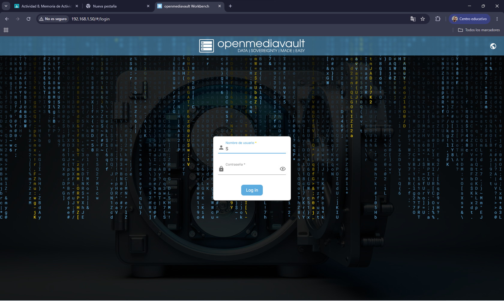
Una vez iniciemos el equipo podremos acceder a toda su funcionalidad.
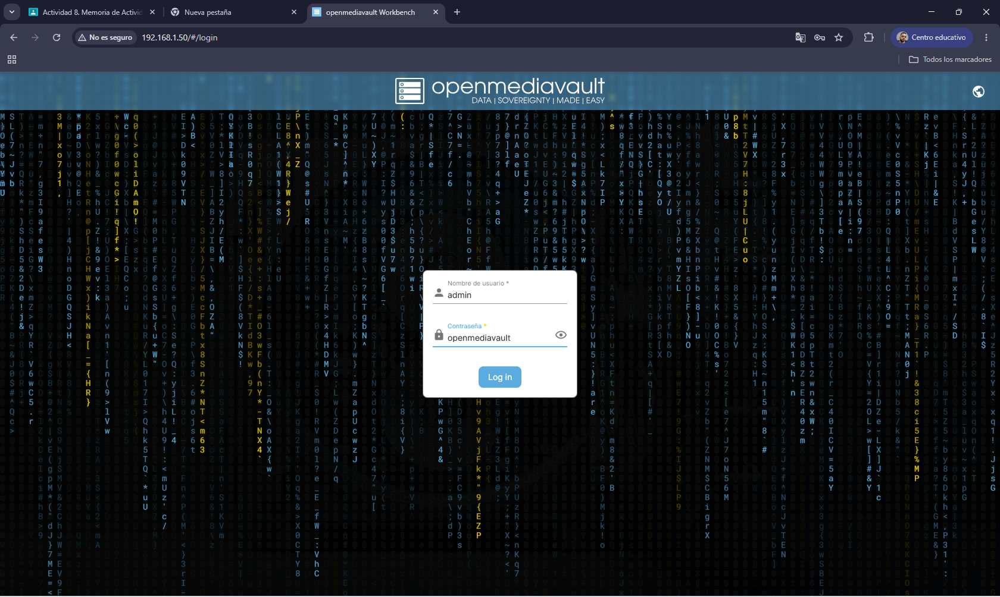
Una vez lo iniciemos deberemos de registrarnos con las credenciales proporcionadas por el administrador.
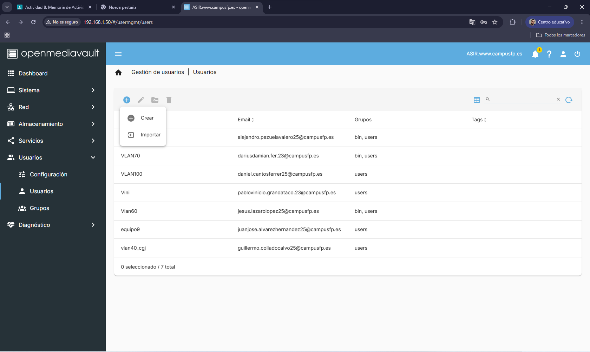
Primero deberemos de crear un nuevo usuario. Para ello iremos al apartado de usuarios y seleccionaremos crear.
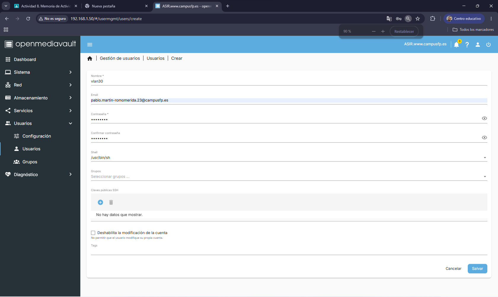
Después rellenaremos la información necesaria y le daremos a guardar.
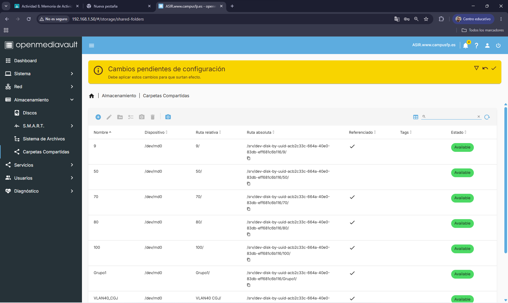
Después deberemos de crear una carpeta compartida desde el apartado almacenamiento.
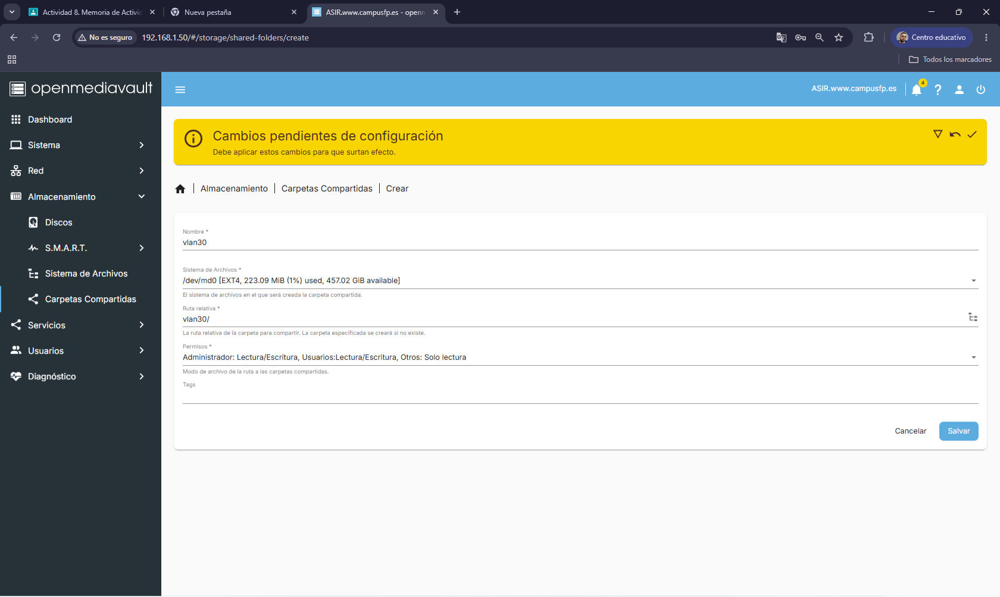
Después rellenaremos los datos necesarios.
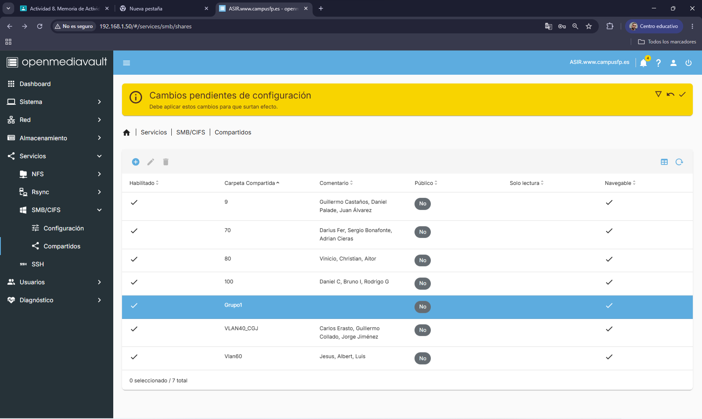
Después deberemos de verificar la carpeta desde servicios y SMB/CIFS.
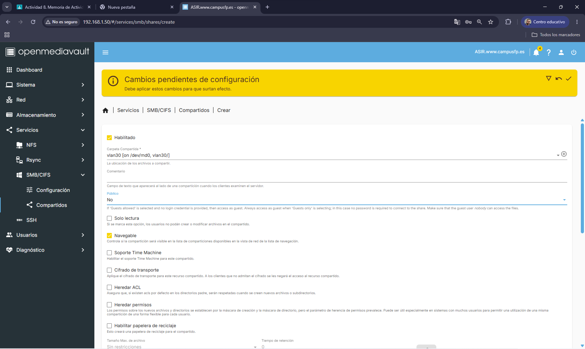
Dentro de compartidos le daremos a agregar.
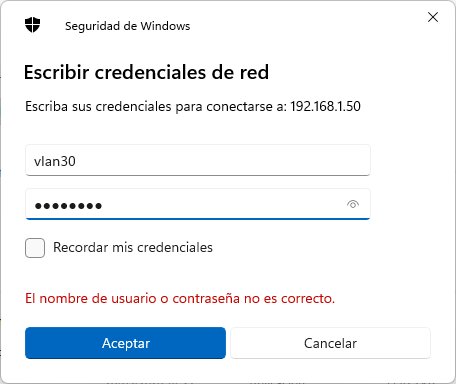
Después deberemos de aplicar los cambios y buscar la carpeta desde el explorador de archivos usando la IP del NAS.
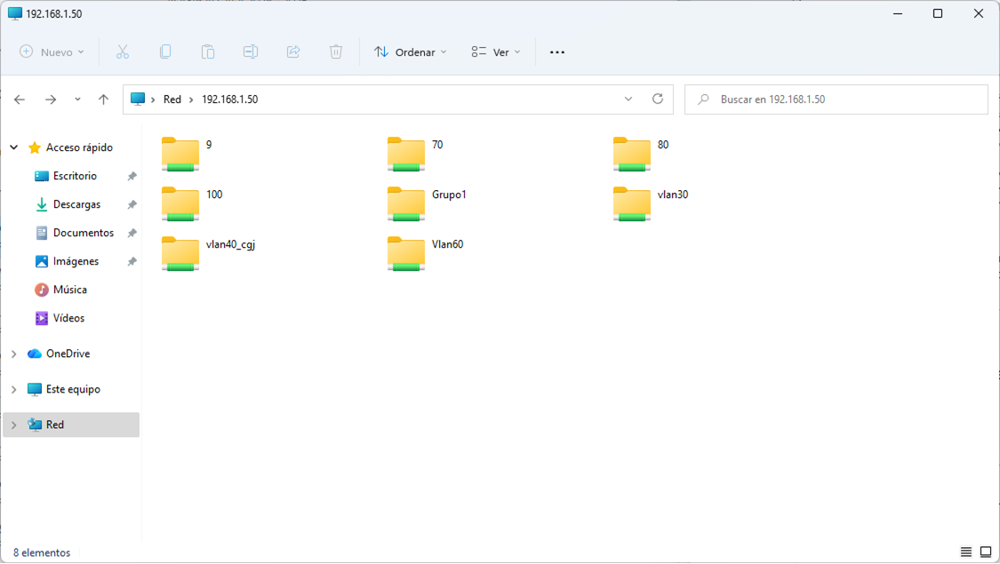
Después de registrarnos podremos acceder a la carpeta compartida creada y subir la documentación.
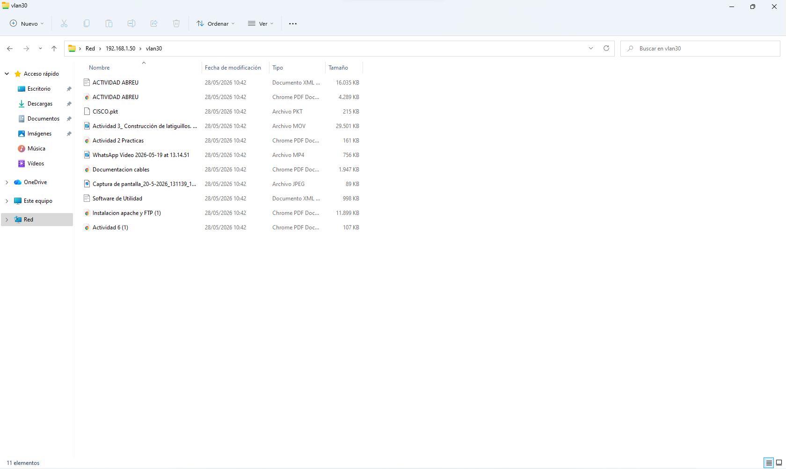
Pulsa el siguiente botón para abrir el documento PDF de la actividad.
Abrir PDF